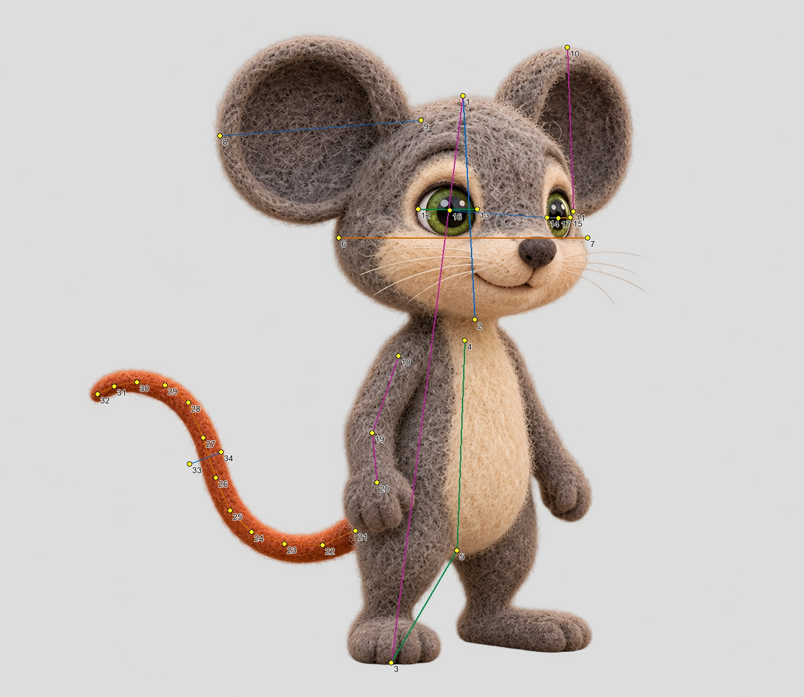
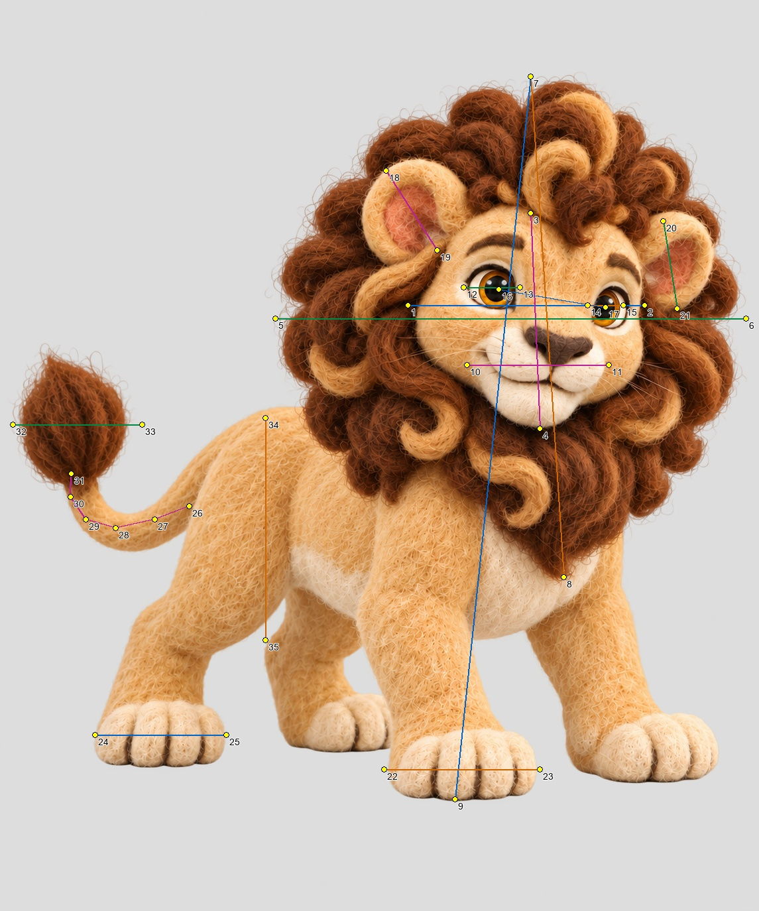

Manual native-image annotations with uncertainty. Surface proxies are identified; hidden joints remain unmeasured. No source image edits or new generation. Leo actual-byte observations do not resolve his canonical approval mismatch.
canonical_bytes_match
Actual image SHA-256: c0d500c1a9644eed94b121d1e3205654901ac414fb07723c4a8f7996cdc8ae3f

| Ratio | Baseline | Interval | Visible quantities |
|---|---|---|---|
| projected_head_fraction | 0.39 | 0.37–0.42 | head_height / standing_height |
| head_to_torso | 1.06 | 0.93–1.22 | head_height / torso |
| ear_to_skull | 0.81 | 0.72–0.91 | near_ear / skull_width |
| far_ear_to_skull | 0.66 | 0.57–0.76 | far_ear / skull_width |
| eye_to_skull | 0.24 | 0.20–0.28 | near_eye_width / skull_width |
| far_eye_to_skull | 0.09 | 0.07–0.12 | far_eye_width / skull_width |
| eye_spacing_to_skull | 0.44 | 0.40–0.48 | eye_spacing / skull_width |
| visible_arm_path_to_torso | 0.62 | 0.39–0.90 | visible_arm_path / torso |
| torso_to_visible_standing_leg_height | 1.87 | 1.51–2.33 | torso / visible_leg_height |
| tail_arc_to_torso | 1.68 | 1.07–2.42 | visible_tail_arc / torso |
| tail_thickness_to_torso | 0.16 | 0.11–0.23 | tail_thickness / torso |
observed_local_bytes_only_pending_owner_hash_reconciliation
Actual image SHA-256: 1c4f773d04c5e6f7229448bfe00caf7f610d427f5dc0d145cba57e7671a59362

| Ratio | Baseline | Interval | Visible quantities |
|---|---|---|---|
| mane_to_visible_face_width | 1.99 | 1.78–2.22 | mane_width / visible_face_width |
| mane_height_to_visible_face_height | 2.32 | 2.07–2.62 | mane_height / visible_face_height |
| muzzle_to_visible_face_width | 0.60 | 0.51–0.70 | muzzle_width / visible_face_width |
| near_eye_to_visible_face_width | 0.24 | 0.20–0.29 | near_eye_width / visible_face_width |
| far_eye_to_visible_face_width | 0.15 | 0.12–0.19 | far_eye_width / visible_face_width |
| eye_spacing_to_visible_face_width | 0.46 | 0.41–0.51 | eye_spacing / visible_face_width |
| near_ear_to_visible_face_width | 0.40 | 0.32–0.49 | near_ear / visible_face_width |
| far_ear_to_visible_face_width | 0.37 | 0.30–0.46 | far_ear / visible_face_width |
| near_forepaw_to_visible_face_width | 0.66 | 0.56–0.77 | near_forepaw_width / visible_face_width |
| near_hindpaw_to_visible_face_width | 0.55 | 0.47–0.65 | near_hindpaw_width / visible_face_width |
| visible_tail_shaft_to_face_width | 0.67 | 0.35–1.03 | visible_tail_shaft / visible_face_width |
| tail_tuft_to_visible_face_width | 0.55 | 0.45–0.66 | tuft_width / visible_face_width |
| visible_flank_to_face_width | 0.94 | 0.77–1.13 | visible_flank_height / visible_face_width |
| mane_height_to_standing_silhouette | 0.69 | 0.65–0.73 | mane_height / standing_silhouette_height |